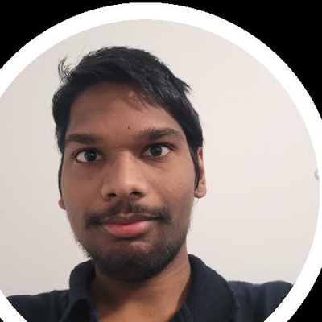

Étudiant en BUT3 GEII à l'IUT d'Évry, l'électronique et les systèmes embarqués c'est ce qui m'a vraiment accroché depuis le départ. Deux stages en SAV (chez Scientec sur des instruments d'optique, chez Witt France sur des analyseurs de gaz) m'ont confirmé que c'est le terrain qui m'intéresse. Je cherche une alternance de 2 à 3 ans dès septembre 2026, dans l'électronique, l'embarqué ou l'automatisme.

Explorer le portfolio